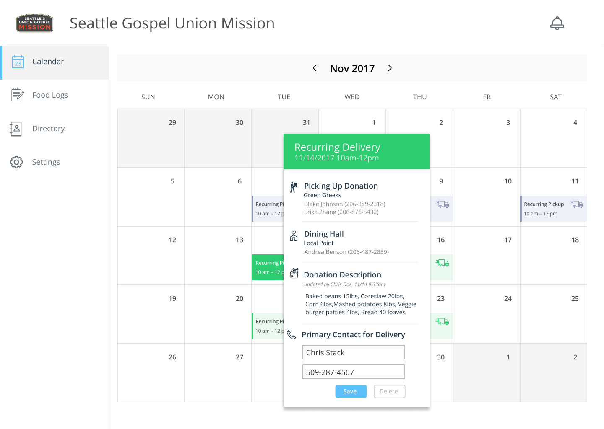

Often traveling can involve feelings of stress, anxiety, aaaaaaaaaaaaaaaaahhhhhhhhhhhhh At the University of Washington, on campus dining halls work with food delivery groups to transport leftover food to non-profit agencies but these groups have limited capacity and face numerous challenges, resulting in a large amount of food still going to compost.
How can a HCDE directed research group reduce the amount of food composted in the UW community while simultaneously feeding the food insecure population in Seattle?
My role in the research group was hybrid in nature. I was both on the video and the UX team. For my video role I acted in a creative support role storyboarding, script editing, and coordinating logistics such as equipment rentals. For my UX role, I helped finalize design components like the calendar and the chips used as clickable events. I also went into the field and tested the design with two different non-profit agencies moderating and note-taking for usability tests. Lastly, I did a ride-along contextual inquiry with a local food bank to observe how they handle food pickups.
UW dining halls serve hundreds of customers a day. Sometimes they have leftovers in the form of prepared food. Standard protocol calls for this food to be frozen and eventually composted if it does not get used. Mealmatch allows for a dining hall manager to setup reoccurring pickups or emergency pickups for non-profit agencies to use the leftover food. Student volunteers will be assigned by a student coordinator to transport the food from the dining hall to the non-profit agency. In our initial research we found non-profits can be understaffed and chaotic. All of this is coordinated through the Mealmatch website in the form of a calendar and request system. Throughout the entire process safety is prioritized. Delivery drivers are required to obtain safe food handling cards, training, rent a clean Ucar, and sign when food is picked up. The development of this system was funded by the UW Sustainability fund. The pilot for the delivery system will take place Spring 2018. Food is supplied by UW's Local Point Dining Hall and will be delivered to Union Gospel Mission and Compass Alliance Housing.
Here are some snapshots of the system and interfaces I worked on.
Food waste is a global issue, and to spread a message of hope, we made a video to communicate our message. I helped Collin T. on the creative side of producing this video by script editing and storyboarding the scenes to save time shooting and editing.
Article from the Daily Research, Design, Video Production Figma, Usability testing, Contextual inquiry, Storyboarding